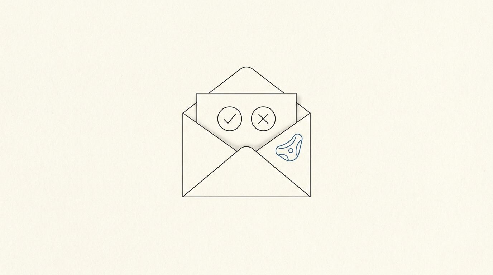

Climbing Auto-Register
Automation · DeployedNever fill out the climbing-session form again — it watches my inbox, asks me yes or no, and signs me up.

My university posts climbing-training sessions by email, and each one needs a Microsoft Form filled in to claim a spot. This little service does the watching, asking, and form-filling so I don't have to.
The annoyance
Climbing sessions are announced on short notice, and if you want in you have to spot the email and fill out a form before the slots run out. Miss the email, miss the session. Classic candidate for automation.
How it works
The flow is fully hands-off after one tap:
- Watch — twice a day (8 AM and 6 PM Budapest time) it scans Gmail for a training announcement from the organiser, and pulls out the form link and deadline.
- Ask — it emails me a clean YES / NO confirmation so I stay in control of which sessions I actually attend.
- Act — tap YES and a Playwright browser fills out and submits the Microsoft Form with my details, then emails me a success/failure confirmation.
Nice touches
- Signed links — the YES/NO buttons carry JWT tokens that expire after 48 hours, so a stale email can't trigger a registration.
- Scale-to-zero — it lives on Fly.io and idles down to zero instances when nothing's happening, so it costs essentially nothing to keep running.
- Hungarian — the confirmation emails are written in Hungarian, to match the source announcements.
Built with
Python, the Gmail API for monitoring, Playwright for headless form-filling, JWT for the time-limited confirmation links, and Fly.io for deployment with scheduled twice-daily checks and auto-scaling to zero.